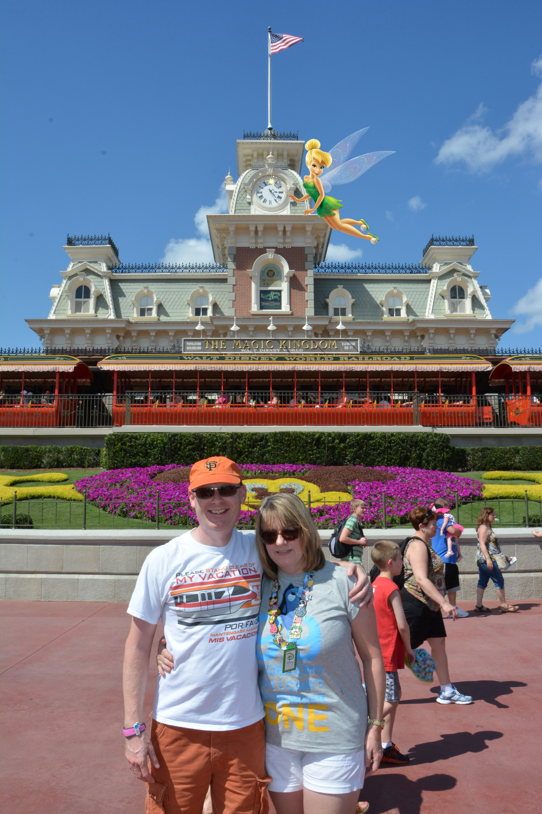

The Magic Kingdom has a lot to offer to both young and old with roller coasters for thrill
seekerand smaller rides for younger guests. You enter the park via Main Street USA.
Here you will find a variety of shops and fast food outlets. At the top of Main Street is Cinderella's castle.
The park is broken down into 4 themed lands all Fantasy Land, Adventure Land, Frontier Land and Tomorrow Land.
Each land is packed with rides, shows and places to eat.
The evening fireworks are spectacular! This is a great place to finish your day.
Disney has more to offer than just rides. There are shows, Character Meet and Greets
where you can meet all of your favourites,including the Disney Princesses. The Enchanted Tiki Room
is a fun animatronic bird show. It is a good option to escape from a thunderstorm. Close to the Tiki Room you can find
Aloha Isle where you can get a refreshing Dole Whip float.
There are 3 character dining experiences in the Magic Kingdom. The Crystal Palace is an
all you can eat buffet with Winnie the Pooh and Friends. Cinderella's Royal Table is a
fine dining restaurant with Cinderella and other Princesses. At Be Our Guest, Beast makes an appearance for photographs.
There are links for other restauarants.
Check out the links at the side for details on restauarants, rides and attractions at the park.